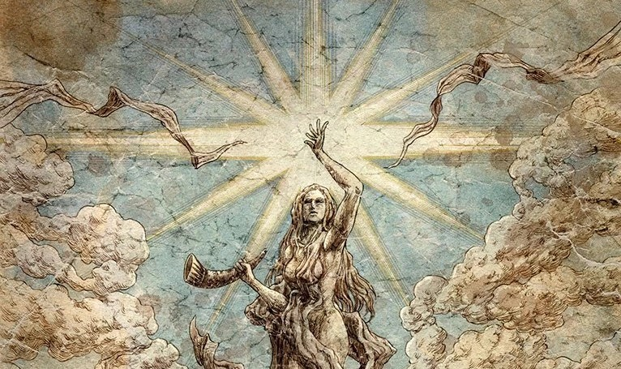
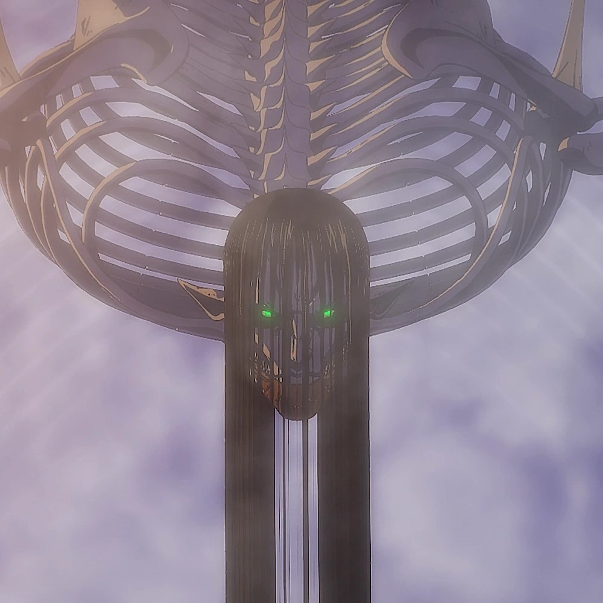
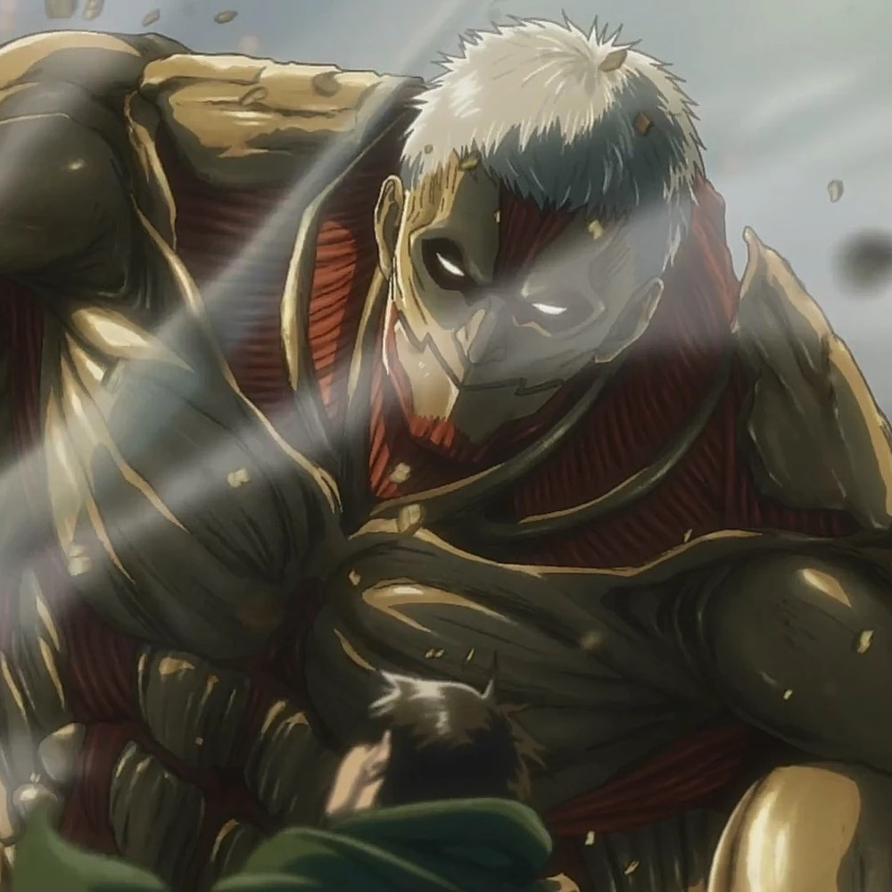
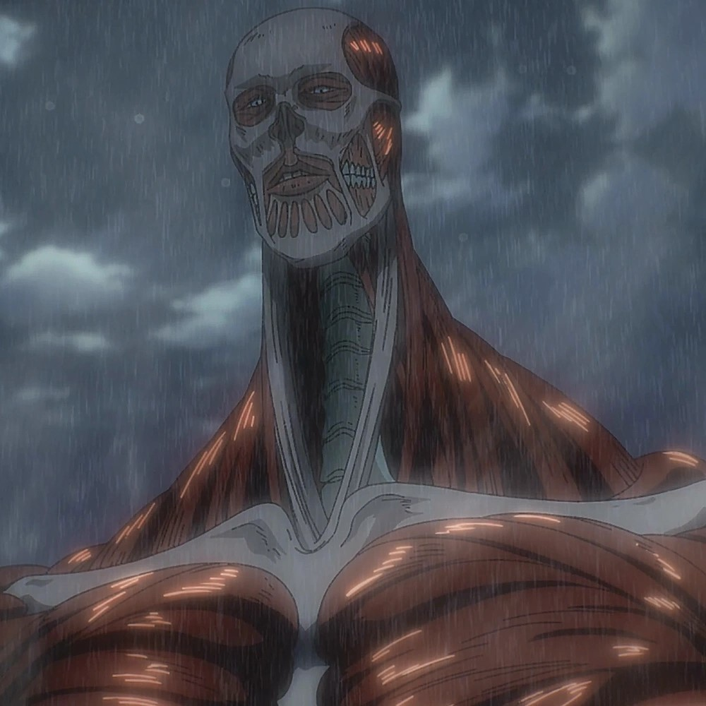
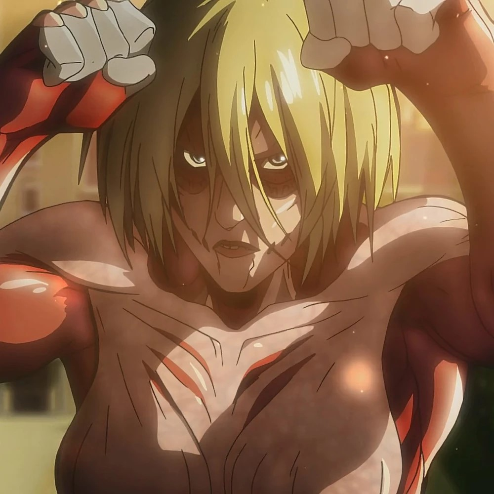
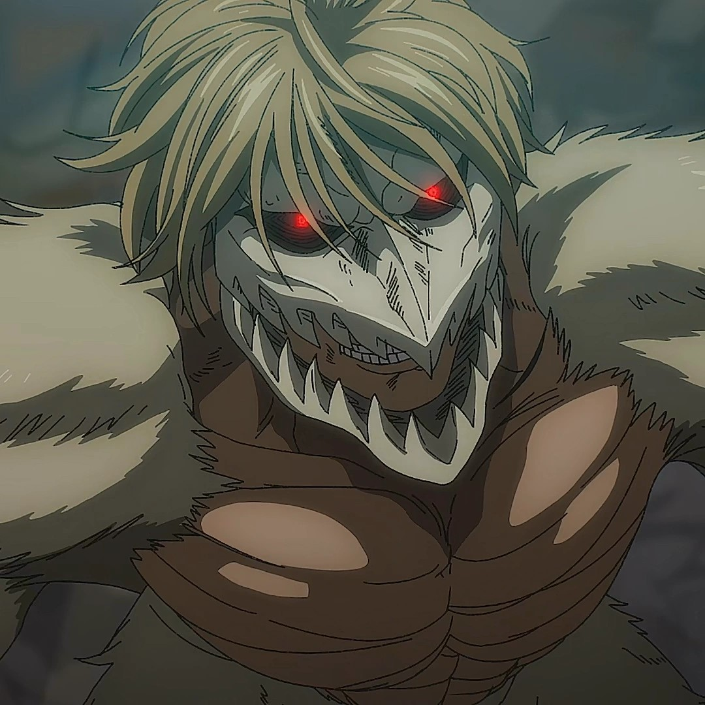
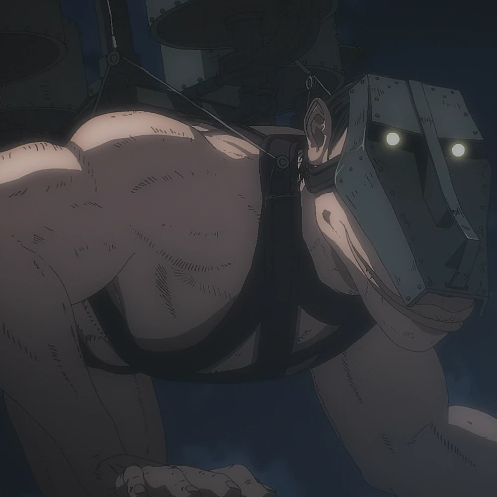
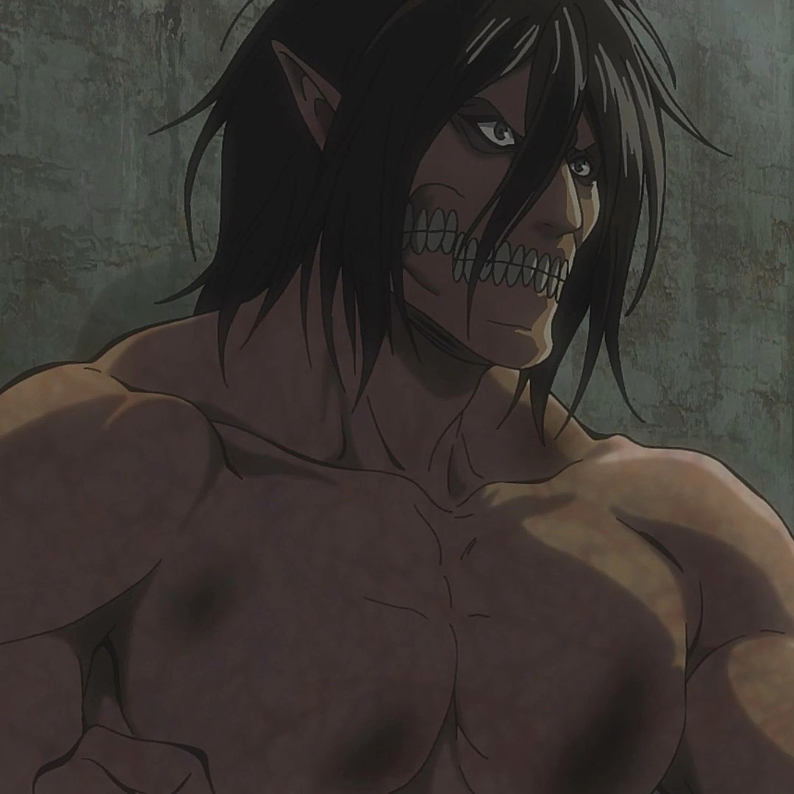
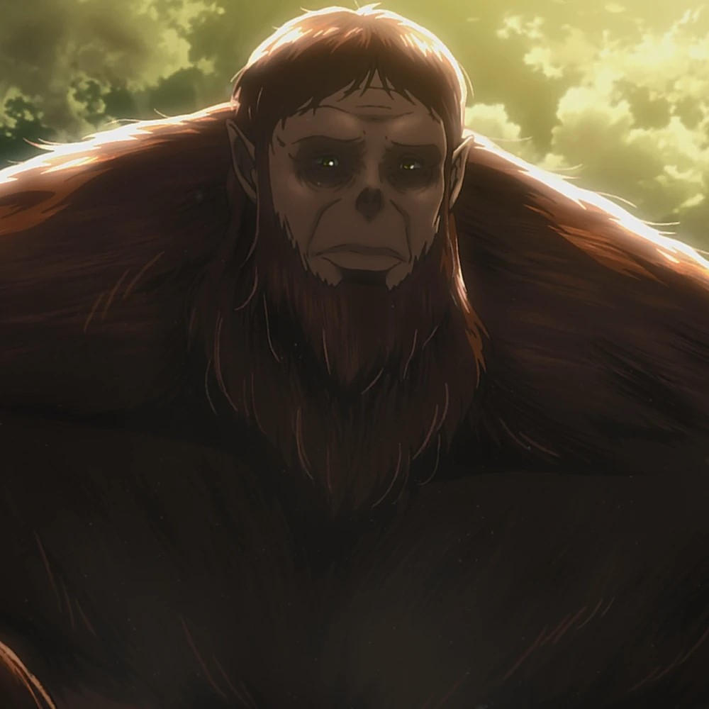
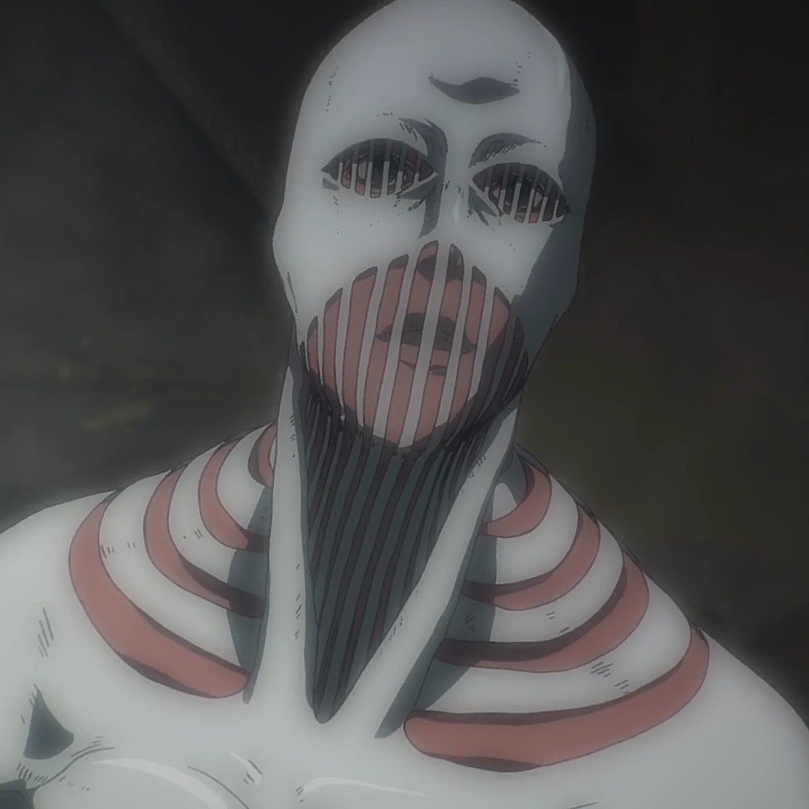

The Titans

Here you can learn more about a certain Titan
        
The Founding Titan
The founding Titan is a titan that has been in the possession of the royal family of the anime for generations. It has been passed down from generation to generation. It has the power to control the minds of both humans and Titans. The Founding Titan is in the current possession of Eren Yeager.
Abilities
- Titan Creation
- Can transform Subjects of Ymir into Titans
- Titan control
- Memory manipulation
-
Anatomical manipulation
- Can change the body composition of the Subjects of Ymir
- Telepathic communication
The Armored Titan
The Armored is one of the tougher titans in the show. The reason for that is because it possesses skin-like armour plates that protect it against heavy damage. It is also one of the titans that contributed to the destruction of Eren Yeager's home. The one who is in possession of this titan is Reiner Braun.
Abilities
-
Armored Skin
- Has plated hardened armor skin on its body
-
Hardening
- Can harden certain parts of their skin
The Collosal Titan
The Collosal Titan is one of the biggest titans in the anime and is mainly known for the massive explosions that occur when the person in possession of it transforms. The collosal Titan is at the moment under Armin Arlert's control and is one of the main Titans used to win a war almost instantly. This Giant Titan stand around 60 meters tall and is the main titan that started the the revenge story of Eren Yeager.
Abilities
-
Steam emmision
- Can emit hot steam from its body
- Explosive transformation
- Massive in Size
The Female Titan
The Female Titan is a very versatile Titan and is also very mobile. She has the ability to harden certain parts of her skin to protect herself from attacks. This titan also has the ability to attract other pure titans with a very loud scream. This can change the game massively, but it also puts herself at risk. The human in possession of this titan is Annie Leonhart.
Abilities
- Adaptation
- Can gain the abilities of other Titans by consuming certain parts of them
- Versatility
- Titan Attraction
- Can Attract other Titans with a deafening scream
-
Hardening
- Can Harden certain parts of the skin for protection
The Jaw Titan
The Jaw Titan might be one of the smallest titans of the Nine, but it has one of the most powerful jaws. It can almost penetrate anything with its jaws alone. This titan makes up for its size with speed. It is very fast and versatile. It uses its environment as a way to move around better. The person who controls this titan at the moment is Falco Grice.
Abilities
- Powerful biting strength
- Fast and Agile
- Sharp and hardened claws
The Cart Titan
One of the weakest Titans of the Nine, but one with the highest speed and endurance. This Titan, who is in the possession of Pieck Finger, is mainly used to carry heavy weaponry on its back. It even helped the beast titan by carrying rocks to throw at its enemies. This titan can also stay the longest in its titan form of all the titans, which is one of the traits that sets it apart from the others.
Abilities
-
Endurance
- Can be in a titan form longer than any other Titan
-
Quadrupedal form
- Allows it to carry cargo on its back
- Speed
- Can talk unlike other titans
The Attack Titan
Most humans that are in control of a titan can see the past memories of the previous titan inheritors. But what makes this Attack Titan special is the fact that it can not only see the past memories of the people before but also the future memories of the people that will still enherit the Titan. This is also one of the titans who fought for freedom always and never backed down. This titan is now in the possession of Eren Yeager.
Abilities
-
Can see future memories
- Can see the memories of the future inheritors of the Attack Titan
- Capable of rapid regeneration
- Higly agile
The Beast Titan
The Beast Titan has a very unique appearance compared to all the other titans. But that is not the only thing that sets it apart from the others. It has long arms that it uses to throw very large objects, like bolders. It also has the ability to control and command other pure titans with its vocal voice. This titan can be argued to be one of the stronger titans of the show due to its size and its abilities. The Beast Titan is now in the possession of Zeke Yeager.
Abilities
- Accurate and powerful throw
-
Hardening
- Can Harden parts of the skin for protection
-
Titan Creation
- Can turn subjects of Ymir into Titans
- Titan Control
The Warhammer Titan
One of the strongest titans in the show. What makes this titan so strong is its hardening ability. It not only has hardened skin around its whole body, but it also has the ability to make weapons from hardened titan flesh. This allows the titan to make weapons such as swords and hammers, for example. The titan is now in the possession of Eren Yeager.
Abilities
-
Structured Hardening
- Can make objects from hardened titan skin
-
Remote Control
- Does not have to be physically in the titan body to control it